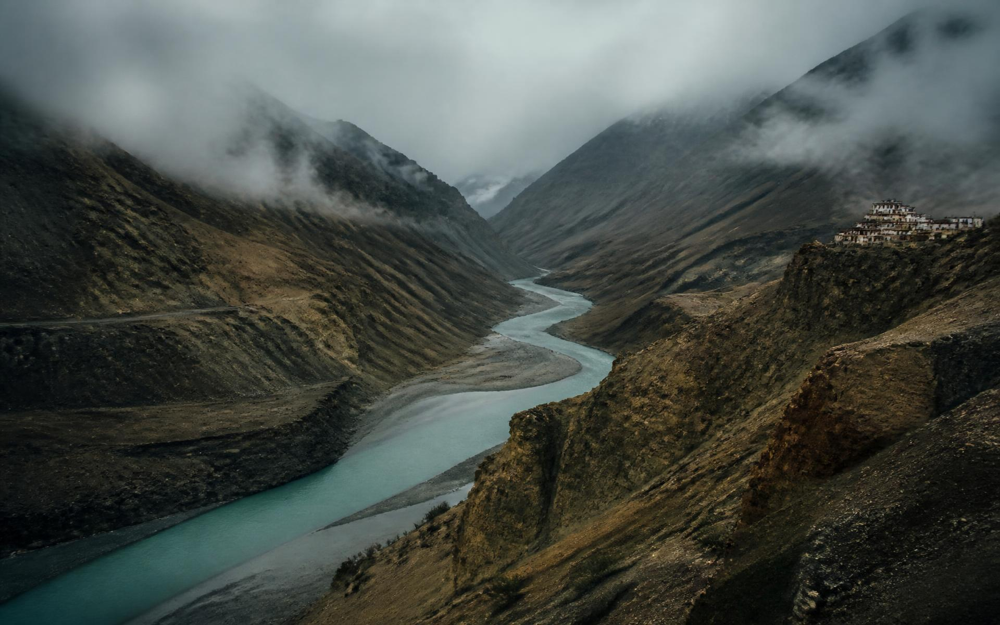
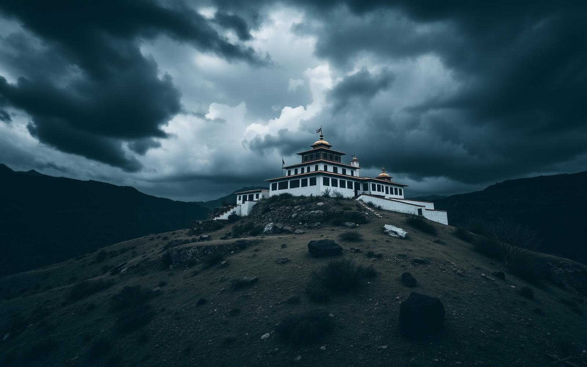
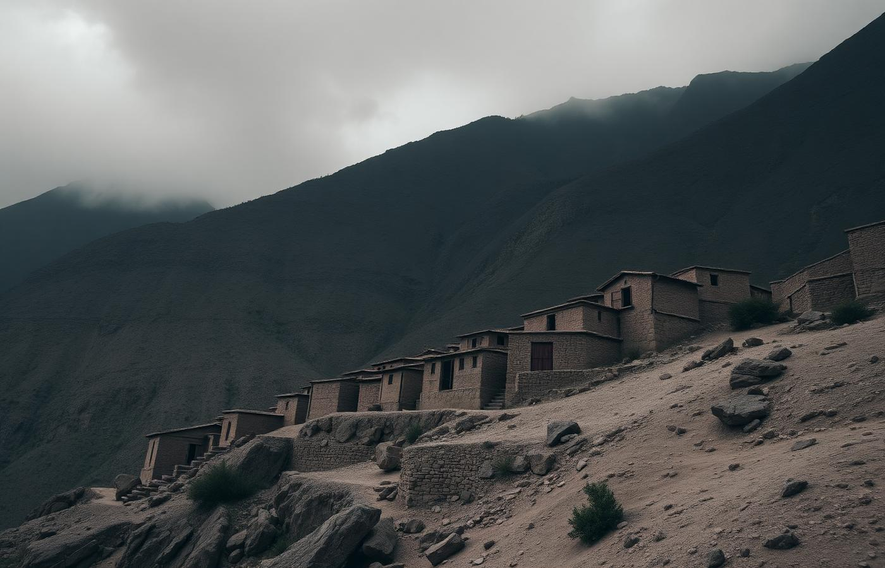
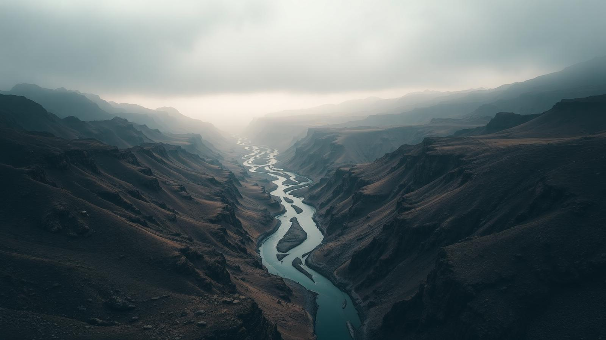
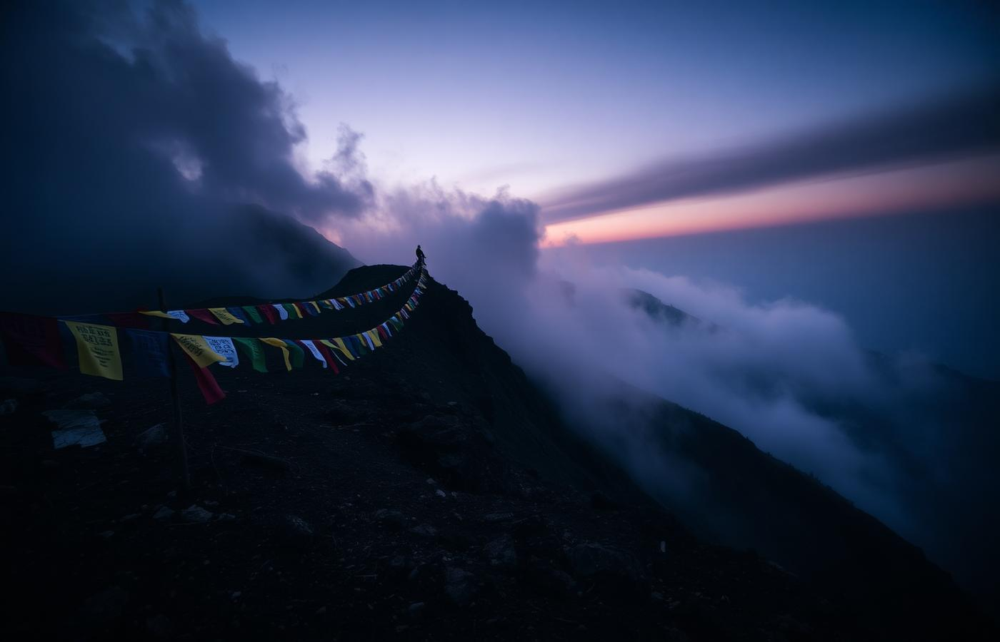

Fresh
authenticity

The silent
guardians
At Key and Tabo the monks have kept the same hours for a thousand years — four in the morning, the long horn, the low register of chanting through mud walls a metre thick. Nothing is staged for arrivals. You are simply, briefly, inside it.
The roof
of India
Four thousand five hundred and eighty-seven metres at Komic. Modest by Himalayan standards. But here the world rearranges itself: the treeline is long gone, the sky is closer than the next village, and ammonite fossils lie in the dust from an ocean that dried before the mountains rose.
Where the light
arrives an hour late
Mornings
Prayer hall, then barley porridge on a sunlit roof. Walking begins when the frost gives way, not when a schedule says so.
Afternoons
Fossil hunting at Langza, the post office at Hikkim, or a long silence beside the Spiti river with nothing asked of you.
Nights
One of the darkest skies in India. The Milky Way is not a faint smear here — it casts shadow on the snow.




